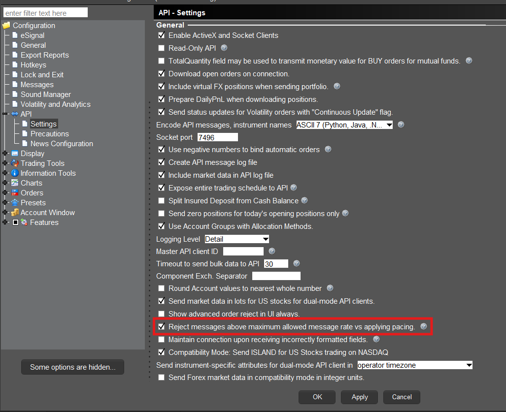

Pacing Limitations with regards to the TWS API are based on the number of requests submitted by a client connection. A “request” is a user-submitted query to retrieve some form of data.
An example of a request is a query to retrieve live watchlist data. While you may make a single request for market data, you will receive market data until the subscription is cancelled or your session is disconnected. Only the original request to begin the flow of data will contribute to the pacing limitation.
The maximum number of API requests that can be submitted are equivalent to your Maximum Market Data Lines divided by 2, per second.
By default, all users maintain 100 market data lines. Therefore, users have a pacing limitation of (100/2)= 50 requests per second.
Clients that have increased their market data lines to 200, by way of commission or Quote Booster Subscription, would receive (200/2)= 100 requests per second, and this would increment as your market data lines increase or decrease.
In some use cases, if you plan to send more than 50 requests per second, some orders may be queued and delayed. For this scenario, please consider switching to FIX API.
For FIX API users in IB Gateway, the limitation is 250 messages per second.
For FIX API users without using IB Gateway or TWS, there is no limitation on messages per second, but less is better.
The TWS API supports two formats for users who break the pacing limitations. This behavior is set in the Global Configuration of Trader Workstation or IB Gateway. Under “API” and then “Settings” users will see a setting for “Reject messages above maximum allowed message rate vs applying pacing.”
